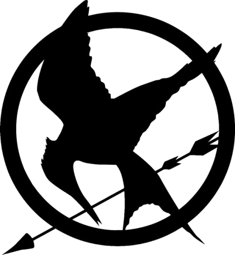
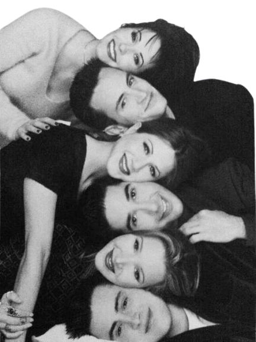
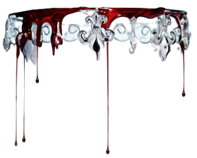
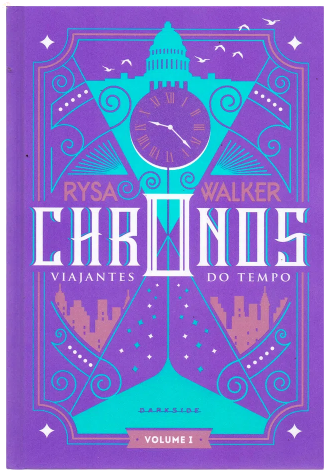
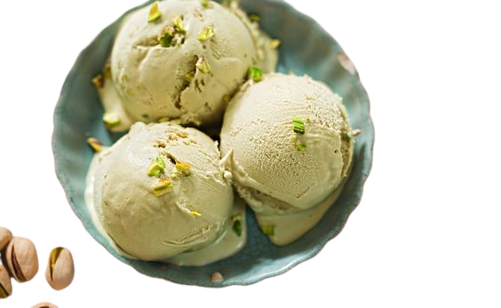
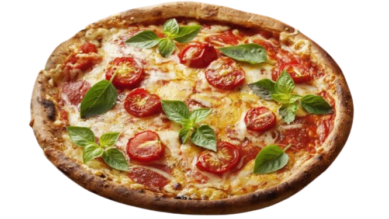

Eu gosto de ler, desenhar, escutar música, tirar foto, ver filmes/séries/documentários e comer.
Sou muito eclética em relação a música, escuto um pouco de cada gênero. Desde Jazz ao funk. Meu cantor favorito é o Post Malone e minha banda favorita é Lagum.
Em relação aos filmes, não gosto de filmes de terror, porque sou medrosa mesmo, e amo filmes de animação.
Minha saga de filmes favorita é Jogos Vorazes.
E sobre as séries, a minha série favorita é Friends.
Em relação aos documentários, assisto um pouco de tudo também, mas os meus documentários favoritos são sobre crimes reais, pricipalmente serial killers.
E em relação aos livros: gosto principalmente dos livros de ficção. Meus livros favoritos são: A trilogia CHRONOS , A saga da Rainha Vermelha e A saga de Jogos Vorazes.
Já em relação a comida eu gosto de tudo também, mas meus tipos favoritos são comida japonesa e italiana, acima de tudo doce e sorvete. Minhas comidas favoritas são meio peculiares:
 